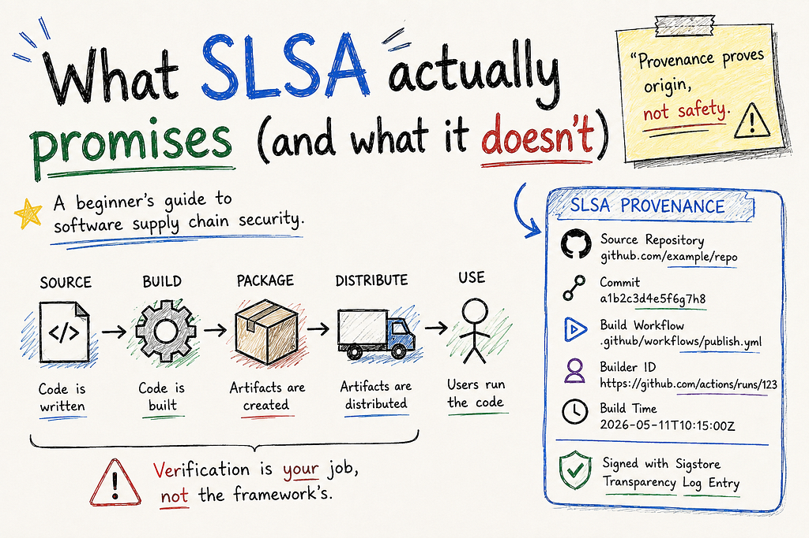
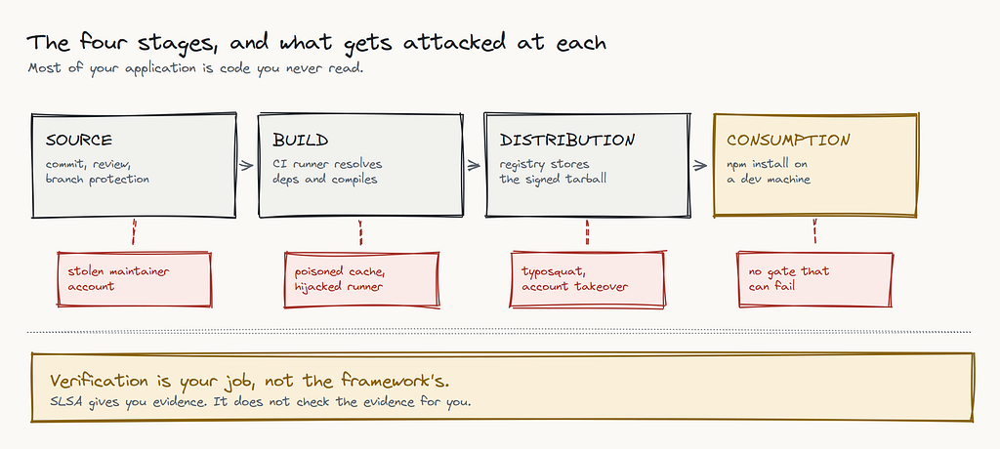
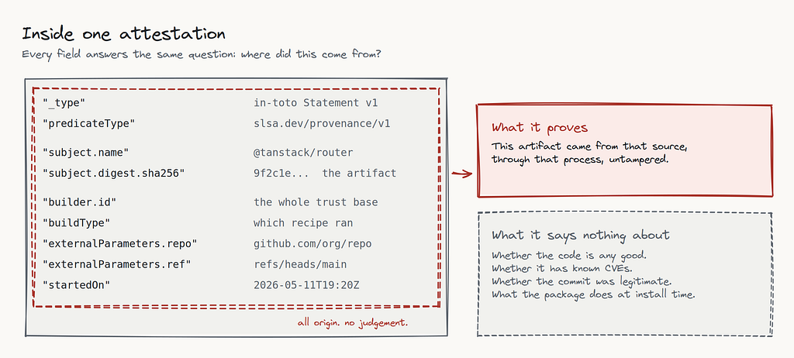
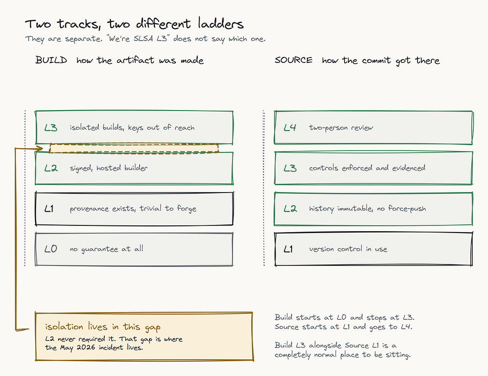
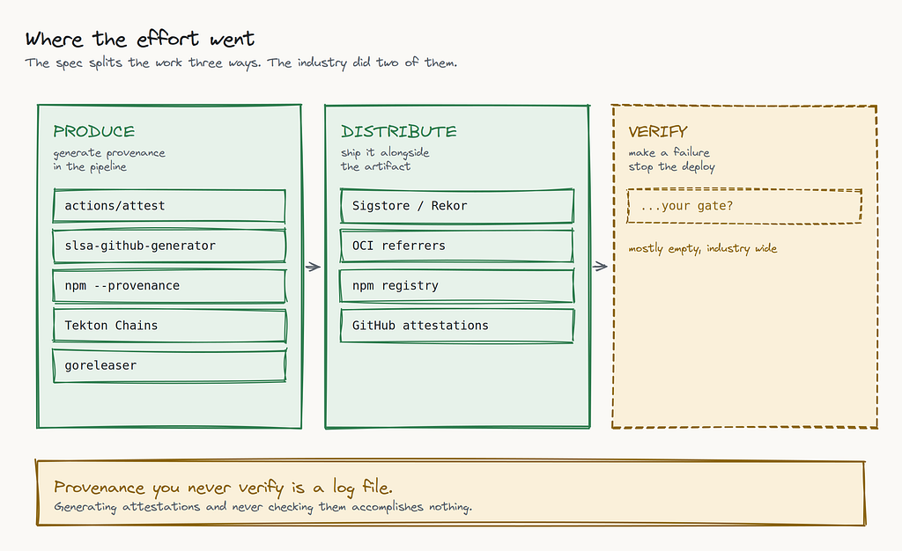

What SLSA actually promises (and what it doesn’t)
A beginner’s guide to software supply chain security.

For about a year I could explain SLSA, the software supply chain security framework to anyone who asked. Tracks, levels, provenance, attestations. I had the vocabulary down.
Then on 11 May 2026, malicious versions of 42 npm packages were published with provenance that verified correctly, and I had to admit something uncomfortable. I could recite the framework, but I had misread the one thing it promises. I had been treating a passing provenance check as a statement that the package was safe. It isn’t, and it never claimed to be.
So this is the explainer I wish someone had handed me at the start. If you’re new to this, don’t worry about the acronyms. I’ll define them as they come up.
First, what is a supply chain attack?
When you run npm install, pip install, or docker pull, you're executing code written by strangers. Hundreds of them. Most of your application, measured in lines, is code you didn't write and have never read.
A supply chain attack targets that trust. Rather than breaking into your servers, the attacker compromises something you already pull in automatically, and lets your own build pipeline deliver the payload for them.
The chain has four stages and every one of them is a target.

Look at the last stage. Verification is your job, not the framework’s.
So what is SLSA?
SLSA stands for Supply-chain Levels for Software Artifacts. It’s pronounced “salsa,” which is either charming or annoying depending on your mood.
It’s a specification maintained by the OpenSSF under an open licence. SLSA is a document, not a tool. You don’t install it. There’s nothing to buy. It’s a set of requirements and a shared vocabulary that other tools implement.
The property it covers is integrity, and only integrity. It answers whether you can prove an artifact came from the source it claims, through the process it claims, with nothing tampering with it along the way. Whether the code is any good, or whether it carries known vulnerabilities, sits outside the framework entirely.
That’s a much narrower promise than most people assume, and the narrowness is deliberate. A framework claiming to deliver “secure software” would be too vague to act on. This one makes a specific claim you can check.
The current version 1.2, approved in November 2025, added the Source track alongside the existing Build track. Two more tracks, covering build environments and dependencies, are still in draft. The only history you need: if you see “SLSA 4” anywhere, that’s the old 0.1 model with a single four-level ladder, and it has been obsolete for years.
The core idea: provenance
Provenance is metadata describing how an artifact was created, recording what built it, from which source, using which inputs, and at what time.
The closest everyday comparison is a food label. A tin that says packed in facility 12, on 3 March, from farm B is giving you provenance. That’s useful information. If farm B turns out to have a problem, you know within seconds whether you’re affected.
But the label makes no claim about whether the food is good for you. It tells you where the tin came from. It says nothing about whether you should eat what’s inside.
Provenance works the same way, and confusing those two things is the most common mistake people make with SLSA. It was certainly mine.
How provenance becomes trustworthy
Metadata in a plain text file proves nothing, because anyone can edit it. So provenance gets wrapped in an attestation, which is a signed statement binding that metadata to one specific artifact. Attestations use a standard format called in-toto, which is what lets tools from different vendors read each other’s output.
The signing usually runs through Sigstore, and the part worth understanding is that it’s keyless. Rather than a long-lived private key sitting in a secret store waiting to be stolen, the build receives a short-lived certificate tied to its CI identity, signs with it, and lets the certificate expire. That binding between the signature and the build’s own identity is what the May incident later turned against itself.
Inside one attestation you’ll find the following:

Notice the red box. Every field answers a question about origin, and none of them says anything about code quality. That isn’t an oversight in the design; it’s the whole point of it.
Two things that catch people out
The builder.id field is supposed to reflect the whole trust base, meaning the platform software, the hardware it runs on, and everyone with access to it, rather than just the workflow file you wrote. When you decide to trust a builder, all of that is what you're trusting.
The dependency list inside build provenance is explicitly best-effort, even at the highest build level. Provenance is not a bill of materials. If you need a complete dependency inventory, that’s an SBOM, answering a different question.
Tracks and levels
SLSA is organised into tracks. Each covers a different part of the chain and has its own ladder of levels. Two tracks are approved today. Because they are separate ladders, saying “we’re SLSA L3” doesn’t mean much on its own, and Build L3 alongside Source L1 is a completely normal place to be sitting.

The Build track: how the artifact was made
Build L0 means no guarantees at all. Most projects start here, and naming it is useful, because it gives you a word for “we have no story at all.”
Build L1 means provenance exists. Something records how the artifact was built, and you can go and read it. L1 provenance is also trivial to forge, so its value is catching honest mistakes, like releasing from a commit that never got pushed. It is not a defence against anybody who’s actually trying.
Build L2 means the provenance is signed, and generated by a hosted build platform rather than by someone’s laptop. This is where it starts being security rather than documentation. Because the artifact is cryptographically bound to its source repository, an attacker can’t produce valid provenance for a repository they don’t control. That kills dependency confusion, where somebody registers a public package using your internal package’s name and waits for your resolver to grab the wrong thing.
What L2 does not require is isolation. The platform doesn’t have to guarantee that builds can’t interfere with each other, or that signing credentials sit out of reach of the build steps. That gap is where the May incident lives.
Build L3 means hardened, isolated builds. Two requirements carry most of the weight. One build must not be able to influence another, which includes poisoning a shared cache. And the provenance signing material must be unreachable from inside the build steps.
The short version is that L2 stops tampering after the build, while L3 stops tampering while the build is running.
The SLSA project frames the jump as a question of where the signing sits relative to the build, which I find clearer than the level numbers. An L2 builder signs from inside the same trust context the build runs in, so anyone who can influence the build can influence what gets signed. An L3 builder sits outside that context and signs using credentials the build has no path to. That difference is why L3 is a platform project and L2 is a config change.
The Source track: how the commit got there
New in v1.2, the Source track covers a class of attack the Build track can’t reach.
Source L1 means using version control, which is a deliberately low bar.
Source L2 means history is preserved, continuous, and immutable, and the system issues provenance for each new revision. In Git terms, force-push is blocked and tags can’t be moved. You get an attributable record of who changed what, and when.
Source L3 means your organisation’s controls are enforced by the platform and recorded as evidence, so a consumer can verify they were in effect rather than just documented somewhere.
Source L4 means two people review every change to protected branches. This is the level aimed at insider threat and compromised accounts.
Build provenance proves the pipeline built what it claims to have built. Source provenance proves the commit got there legitimately. You want both, and policy is the thing that connects them.
Producing, distributing, verifying
Since v1.0 the spec splits the work three ways: producing provenance, distributing it, and verifying it. The industry has poured nearly all of its energy into the first two.

Generating provenance and then never checking it accomplishes nothing. The attestation sits in a registry, correctly signed, describing a build that nobody ever compared against anything. Provenance you never verify is a log file.
Verification takes two steps, and the first one gets far less attention than the second. First you form expectations, deciding in advance which builder, which repository, and which branch or tag counts as legitimate for this package. Then you compare each artifact’s provenance against those expectations, and make a failure stop something from shipping.
Checking that some valid attestation exists proves very little, because anyone can produce a valid attestation for their own repository. What matters is whether it matches what you were expecting.
For tooling: slsa-verifier, gh attestation verify, or cosign, wired into a policy engine like Kyverno or OPA so a failed check blocks an admission or a deploy.
Where SLSA stops: the May 2026 npm incident
Between 19:20 and 19:26 UTC on 11 May 2026, 84 malicious versions went out across 42 packages in the @tanstack namespace. Within hours the same worm had reached more than 200 packages belonging to other maintainers. Credentials harvested along the way were later reused against PyPI, which is a different registry rather than a second worm.
The way in was a workflow that held publishing secrets and also ran code from a pull request. That code poisoned the build cache under the exact key the release workflow would later restore, then waited, because the key was derived from the public lockfile. When a maintainer pushed to main, the release workflow restored the poisoned cache, attacker code ran during the build, and the pipeline published to the registry under its own OIDC identity.
The delivery mechanism matters as much as the break-in. The published tarballs declared an optional dependency pointing at an orphan commit in a fork. On install, npm fetched that commit and ran its prepare script, which executed the payload and then exited with an error on purpose, so npm discarded the optional dependency and printed nothing that looked wrong. The real payload was a large obfuscated file at the package root, left out of the files array and referenced by nothing else.
So the signed artifact and the code that ran on developer machines were not the same object. Provenance covered the tarball. It had nothing to say about what that tarball reached for at install time.
So did SLSA fail here?
Reports described these packages as carrying valid Build L3 provenance. The SLSA project’s response argues otherwise: npm’s built-in provenance is L2, and L2 never required isolation in the first place. A platform genuinely meeting L3 would have had to guarantee that one build can’t poison another’s cache. That property was violated. The attestations were cryptographically valid. The platform was not L3.
I think that reading is correct. I also think it’s cold comfort, and I’d rather say so. “The ecosystem’s default provenance is only L2” describes very nearly everybody. Being technically right about the level number doesn’t help you much on the day it happens to you.
A second case three weeks later was simpler. Around 32 packages under a major vendor’s namespace were compromised through a stolen employee account pushing orphan commits that bypassed code review completely. Workflows then published trojanised packages carrying entirely accurate provenance. The pipeline really did build them. It just had malware in it at the time.
No amount of build provenance addresses that, because it’s a source-integrity failure. Which is precisely what Source L2’s continuous history and Source L4’s two-party review exist to catch.
Where I’d Start
In rough priority order.
- Find any workflow that holds publishing secrets and also runs code from a pull request, then split it in two. One workflow handles fork content on plain pull_request with no secrets. The other holds the secrets and fires only on release, or on commits already merged upstream. The trigger people blame is pull_request_target, but the trigger isn't the bug by itself. It runs your base branch's workflow with your secrets available, which is documented behaviour. The danger is checking out the pull request head afterwards and executing something from it, whether that's a build step, a test command, or an install that runs lifecycle scripts. This sits outside SLSA's scope entirely, and it was the way in.
- Stop sharing caches between pull request builds and publish jobs. The same cache key means a poisoned cache from a fork build gets restored by your next release. Use separate keys, or skip the cache when publishing.
- Write one verification gate that can fail a deploy, before you generate a single new attestation. Check the builder, the repository, and the ref against what you expect.
- Turn on attestations for the artifacts people consume, and skip the test builds.
- Do Source L2 before you attempt Build L3. Block force-push, protect tags, get attributable history. It’s much cheaper, and it covers the stolen-account case.
- Then plan L3 via shared reusable workflows, knowing where the trust root ends up.
None of the following is SLSA, but it matters more than L3 does: pin actions by digest, use lockfiles and npm ci, route installs through a private registry proxy, and consider a cooldown on brand-new versions.
One safety note about remediation order
At least one payload in this family installed a watchdog before it did anything else. A user-level service on Linux, a launch agent on macOS, polling the GitHub API every minute with the token it had just stolen. When that token started returning an authorisation error, meaning somebody had revoked it, the watchdog deleted the user’s home directory.
So if you’re cleaning up a machine that installed one of these packages, don’t open with the token revocation. The order goes:
- Take the host off the network.
- Find and remove the watchdog service and its script.
- Rotate credentials, and only now.
The watchdog also carried a 24-hour timer and shut itself down afterwards, so a machine infected back in May is almost certainly disarmed by now. The stolen credentials and any other persistence still need dealing with.
Where this leaves me
SLSA is worth doing. It’s the only shared vocabulary we have for arguing about software integrity using evidence instead of vibes, and the level structure means you can start on Monday rather than after a re-architecture.
But my mental model was backwards. I’d been treating provenance as a conclusion when it’s really an input. It records what happened. Policy decides whether what happened is acceptable, and monitoring catches the things neither of those anticipated. Three separate layers, and I’d collapsed all of them into a single green checkmark.
If you’re rolling this out, I’m curious about one thing. How many of you have a verification gate that can actually fail?
Corrections welcome. Supply chain tooling moves fast and I’d rather be corrected than confident.
Thank you !
Discussion
Comment here
Comments live in GitHub Discussions and are shown with giscus. Loading them connects this page to giscus.app and GitHub. To comment, you sign in with GitHub.
On LinkedIn
Prefer LinkedIn? Send me a message about this post.
Message me on LinkedIn